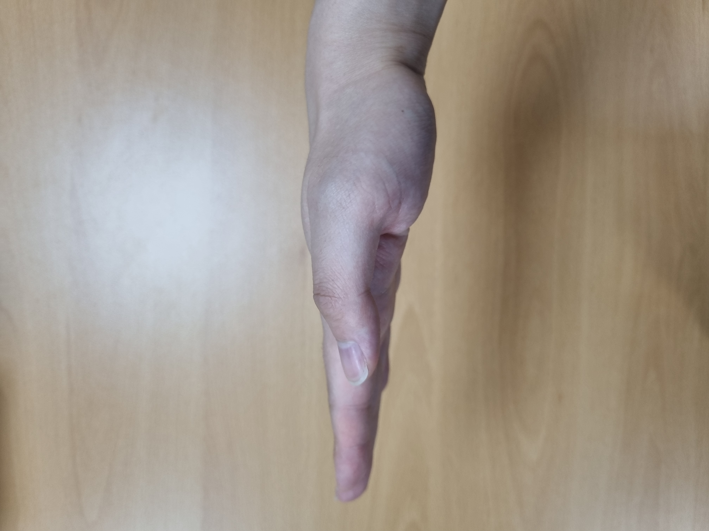
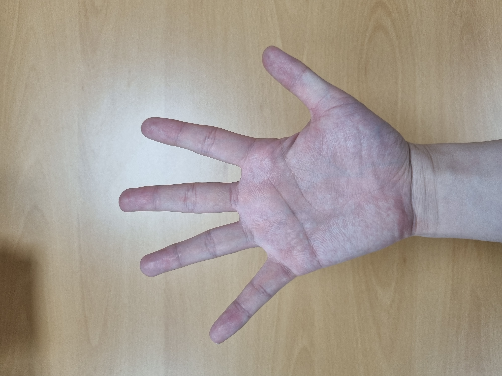
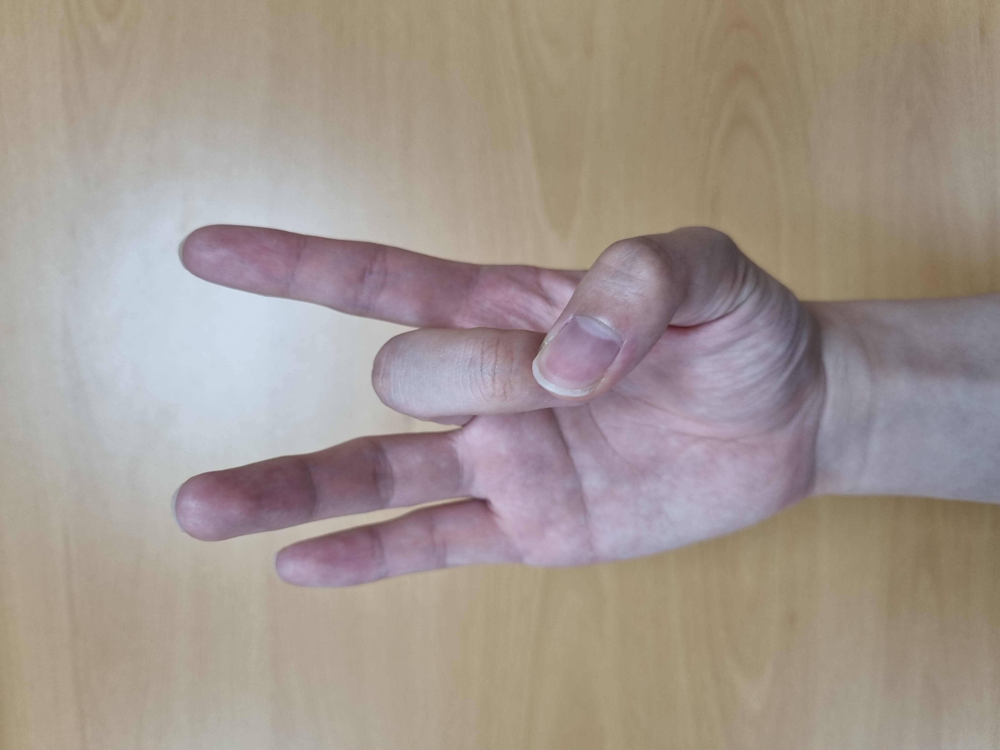

수어 번역 프로그램
The Sign Language Translator Program
띄어쓰기(space)

의미단위로 간격을 조정합니다.
전체삭제(clear)

문자를 전체삭제합니다.
직전문자삭제(backspace)

직전문자를 삭제합니다.
영상(Video)
입력 중인 문장
입력 중인 문장입니다.
번역(translator)
입력 문장
입력된 문장입니다.
번역 문장
번역된 문장입니다.